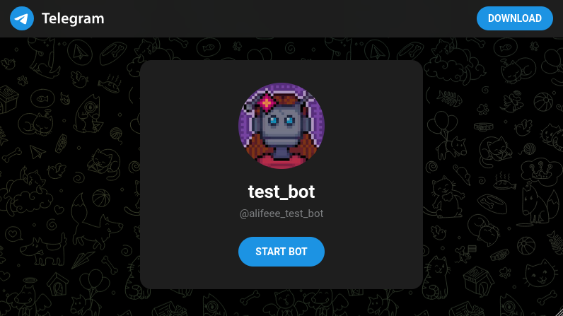

Bus Bot
Bus Bot
- what did the website not do?
- how did I make it better?
- how can other people make use of it? (in a non-technical way)
- were there any other solutions?
1. what did the website not do?
1. what did the website not do?

2. how did I make it better?
- get data manually
- get data automatically
- re-host data in better format
2. how did I make it better?
get data manually
curl https://app.weels.co/api/travels/
38u1fj13-rfd8-q99a-ap22-ao92929ifikf/
elegible-journey-groups
curl https://app.weels.co/api/stops/
by_id?page=1&per_page=25
curl https://app.weels.co/api/travel-passes/
38u1fj13-rfd8-q99a-ap22-ao92929ifikf/
eligible-journey-groups
curl https://app.weels.co/api/journeys/
capacity_between_stops
2. how did I make it better?
get data manually
https://app.weels.co/api/travel-passes/
38u1fj13-rfd8-q99a-ap22-ao92929ifikf/
eligible-journey-groups
?product_id=38u1fj13-rfd8-q99a-ap22-ao92929ifikf
&origin_stop_id[]=38u1fj13-rfd8-q99a-ap22-ao92929ifikf
&destination_stop_id[]=38u1fj13-rfd8-q99a-ap22-ao92929ifikf
&tier_id[]=38u1fj13-rfd8-q99a-ap22-ao92929ifikf
2. how did I make it better?
get data manually
{"total_pages":1,"data":[{"journeys":[{"journey":{"journey_
type":"OUTBOUND","journey_stops":[{"location":{"stop_id":"0
-stop","stop_name":"Chapeltown"},"journey_stop_id":"0-0-OUT
BOUND","departure_datetime":"20260209081200 Europe/London"}
,{"location":{"stop_id":"1-stop","stop_name":"Ecclesfield"}
,"journey_stop_id":"0-1-OUTBOUND","departure_datetime":"202
60209081200 Europe/London"},{"location":{"stop_id":"2-stop"
,"stop_name":"Southey Green"},"journey_stop_id":"0-2-OUTBOU
ND","departure_datetime":"20260209081200 Europe/London"},{"
location":{"stop_id":"3-stop","stop_name":"Shirecliffe"},"j
ourney_stop_id":"0-3-OUTBOUND","departure_datetime":"202602
09081200 Europe/London"},{"location":{"stop_id":"4-stop","s
top_name":"Pitsmoor"},"journey_stop_id":"0-4-OUTBOUND","dep
arture_datetime":"20260209081200 Europe/London"},{"location
":{"stop_id":"5-stop","stop_name":"Sheffield"},"journey_sto
p_id":"0-5-OUTBOUND","departure_datetime":"20260209081200 E
urope/London"},{"location":{"stop_id":"6-stop","stop_name":
"Hunters Bar"},"journey_stop_id":"0-6-OUTBOUND","departure_
datetime":"20260209081200 Europe/London"},{"location":{"sto
2. how did I make it better?
get data manually
schema:
data: list (of days)
id: string (day id)
name: string
journeys: list (of journeys)
id: string
date: string
journey:
journey_type: OUTBOUND | RETURN
id: string (used in journeys)
origin_pickup_id: string (first stop)
origin_pickup_name: string
destination_pickup_id: string (last stop)
destination_pickup_name: string
journey_stops: list
2. how did I make it better?
get data automatically
REQUEST_TIMEOUT = 30
ELIGIBLE_JOURNEYS_URL = (
"https://app.weels.co/api/travels/{pass_id}/
elegible-journey-groups"
)
CAPACITY_URL = (
"https://app.weels.co/api/journeys/
capacity_between_stops"
)
2. how did I make it better?
get data automatically
def get_all_journeys(pass_id):
url = ELIGIBLE_JOURNEYS_URL.format(pass_id=pass_id)
response = requests.get(url)
result = json.loads(response.text)
return parse(result)
def get_journey_capacities(journeys):
url = CAPACITY_URL
body = make_body(journeys)
response = requests.post(url, json=body)
result = json.loads(response.text)
return result
3. how can others use it?
Telegram bot
from telegram import Application, CommandHandler
async def _start(update, context):
await update.message.reply_text("hi!")
def main():
application = Application.token(API_KEY).build()
application.add_handler(
CommandHandler("start", _start)
)
application.run_polling()
3. how can others use it?
Telegram bot

3. how can others use it?
Telegram bot
- Entire timetable
- Journey tracking
4. were there any other solutions?
- get a normal bus
- drive
- carpool?
Conclusions
- 100 or so users
- API was changed
Notes
Are you:
- Developer: maybe you want to make your API faster
- Developer: maybe you want to make your API more closed off
- User: maybe you like being able to send requests
Other telegram bots
- pollen bot
- daily budgeter bot
- whereamibot